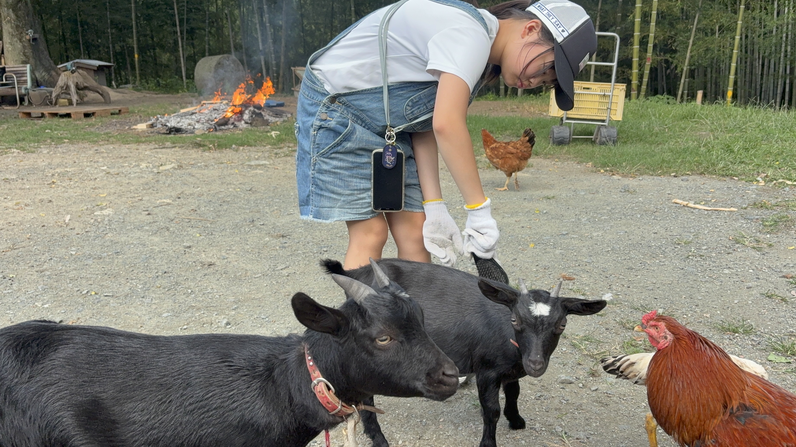
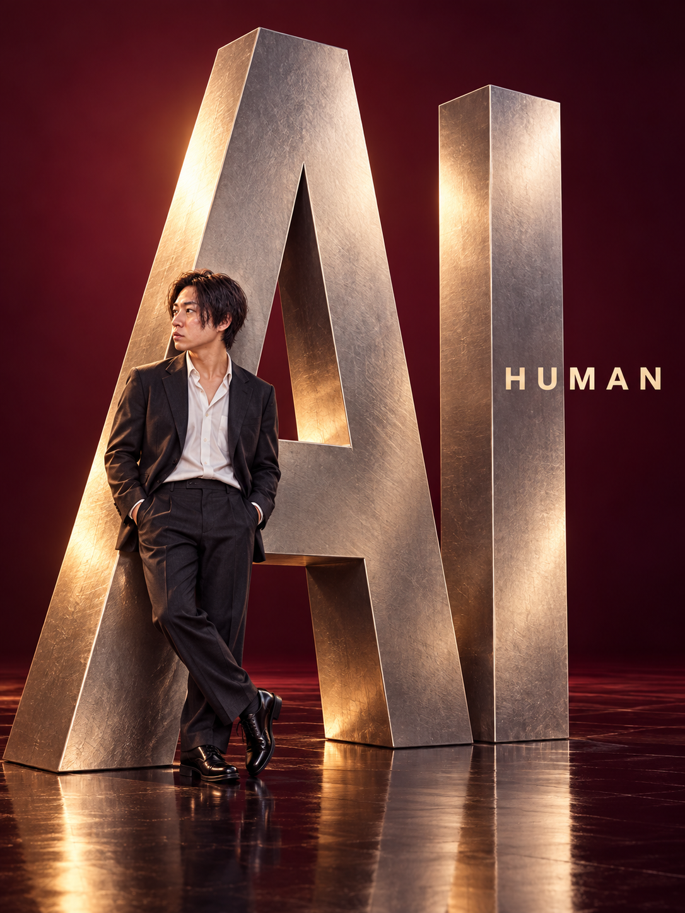

石丸篤史。真剣と書いて、遊びと読む。ヘアメイク、デザイン、アート、イベント、AIが仕事です。
ヘアメイクデザインアートイベントAI
01 / DIRECTION
自然

02 / 100 ARTISTS集う。
100人のアーティスト展を主催
展覧会を見る↗ 04 / DESIGNデザイン。
ブランド構築／LP制作／ロゴ制作／アパレルデザイン／HP制作
制作を見る↗ 05 / AI & HUMANART FOR BEING

人間。
AIで、人間の時間をつくる。
仕事の効率化をお手伝いします。
できること
- 事業内容を聞き、効率化できるか診断
- 電話予約の自動化構築
- 公式LINE構築
- AI×デザイン講座
- AI×SNS講座
ATSUSHI ISHIMARUART FOR BEING
ありのままを
表現しよう。